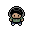
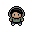
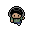
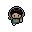

Visor interactivo de sprites y guía de diseño estilo Pokémon Gen 3 / Mario

pixel-josue-idle.png
Reposo / 3/4

pixel-josue-front.png
Primer plano / Habla / AFK

pixel-josue-walk1.png
Paso izquierdo adelante

pixel-josue-walk2.png
Paso derecho adelante
1. ¿Por qué es una idea brutal?
Cuando el usuario navega hacia arriba (scroll up para volver a secciones anteriores), que el personaje gire y camine de espaldas da la sensación de un juego RPG de GBA real.
2. Detalles Anatómicos de Espalda
• Cabeza: Todo el pelo castaño/oscuro cubriendo la nuca (sin cara ni ojos).
• Vincha: Se ve la banda horizontal continua alrededor de la cabeza.
• Chaqueta: Espalda lisa sin cremallera, solo sombras suaves en hombros.
• Pies: Se ve el talón o suela oscura.
3. ¿Cuántos Sprites se Ocupan?
Con solo 2 frames (paso 1 de espaldas y paso 2 de espaldas) ya tenemos el ciclo completo para cuando el usuario sube el scroll.